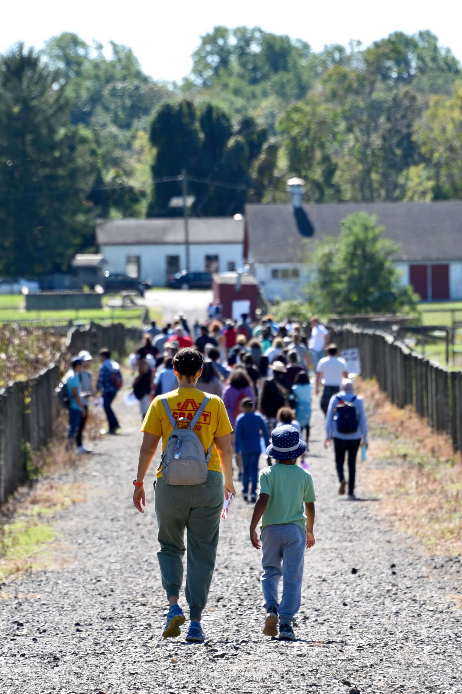
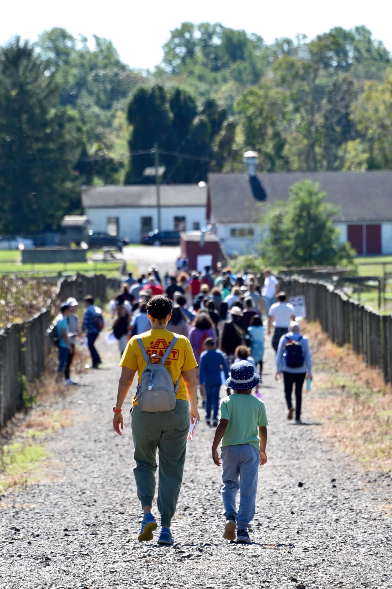
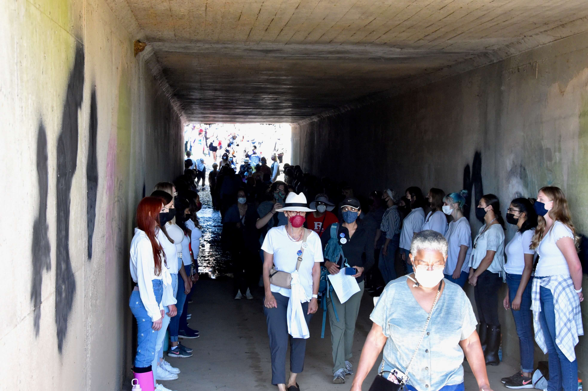
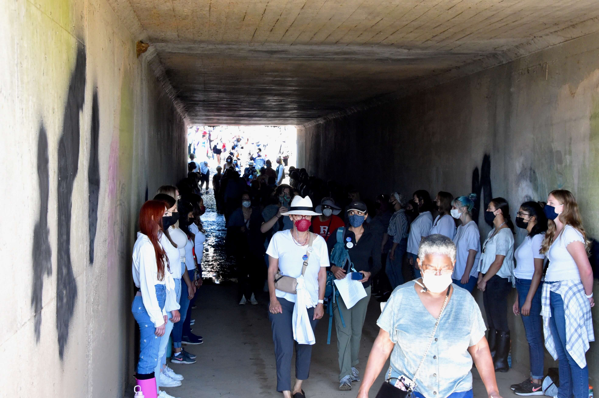

PROJECTS - MARCH2RUGARDENS
A March of Learning and Performance
Activation EventSep 25, 2021
We invited participants to join a choreographed, two-mile walk from the campus to the Gardens and encountered live performances of dance, music, and storytelling along the way. In addition, participants learned from guest and faculty speakers about the layers of history held by the land upon which Rutgers is built.
By marching to the Gardens, participants acknowledged the desire for access to recreational space while discovering and celebrating the resources of Rutgers. Rutgers Gardens comprise 180-acres of land and feature various gardens and plant collections, a farmers’ market, and natural habitats. This valuable resource is cut off from the campus through US Highway 1 and Ryder's Lane and only accessible by car.
Participants
The march attracted 500 participants, 150 of them involved as performers, speakers, or volunteers. Participants included members of Rutgers and surrounding communities, including students, faculty, and staff.
Sponsors
Institute for the Study of Global Racial Justice • School of Environmental and Biological Sciences • Mason Gross School of the Arts • Douglass Residential College; Division of Diversity, Inclusion, and Community Engagement • Center for Women in the Arts and Humanities • Collaborative Center for Community-Engaged Learning and Research • Rutgers Gardens • Zimmerli Art Museum
Creative Forms
Documentary Film • Dance Performance • Live Music • Storytelling
Impact: Concrete discussions on where and how to design pedestrian bicycle paths between Cook Campus and Rutgers Gardens and an ADA pedestrian-bicycle bridge over Ryder's Lane. Welcome back Rutgers event that gave a spirit of “we are a thriving community” after the isolation caused by the pandemic.
 

 


.jpeg)

 .jpeg)
.jpeg)


 Elena Yasin (back).jpeg)

 Choreo MFA Camille Moten.jpeg)